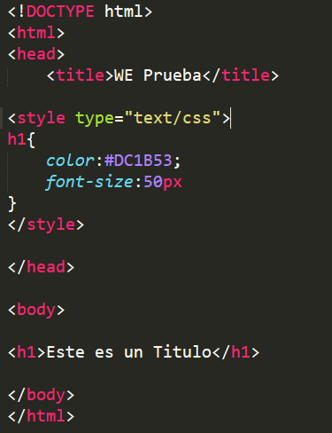

Primeros pasos →
Los conceptos básicos de CSS que aprendí para comenzar a diseñar páginas web.

En esta clase descubrí cómo separar el contenido de la presentación utilizando hojas de estilo externas.
También aprendí sobre selectores, colores, fuentes y márgenes para mejorar la apariencia del sitio web.
Luego de aplicados una gran cantidad de eestilos me di cuenta de que un buen diseño no solo se ve bien, sino que también mejora la experiencia de usuario. Clase de CSS Es mi intento de demostrar lo aprendido en esta clase y que sirva de ejemplo para otros estudiantes.
Estudiante de Desarrollo Web, Juan Saldaña
Los conceptos básicos de CSS que aprendí para comenzar a diseñar páginas web.

Cómo aplicar estilos a diferentes elementos y personalizar su aspecto.
Recomendaciones para mantener un código CSS limpio y fácil de mantener.